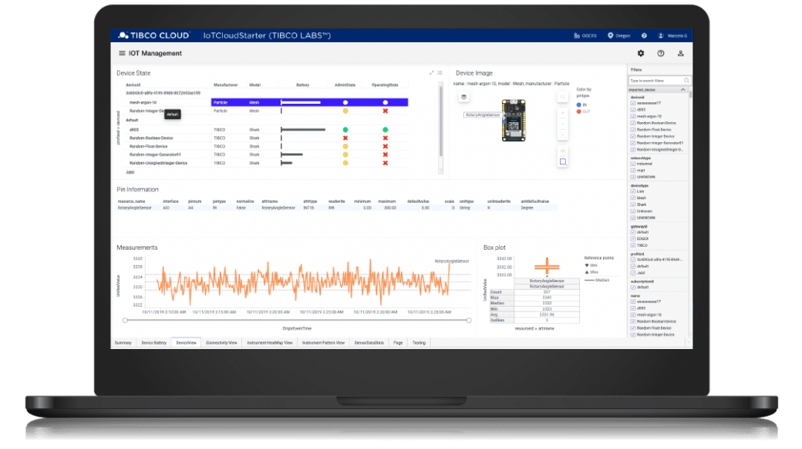

+++
title = "Project AIR"
linkTitle = "home"

+++

{{< blocks/cover title="Project AIR" image_anchor="top" height="full" color="orange" >}}
<div class="mx-auto">
<a class="btn btn-lg btn-primary mr-3 mb-4" href="{{< relref "docs" >}}">
	Learn More <i class="fas fa-arrow-alt-circle-right ml-2"></i>
</a>
<a class="btn btn-lg btn-warning mr-3 mb-4" href="https://github.com/TIBCOSoftware/labs-air/releases/latest">
	Download <i class="fab fa-github ml-2 "></i>
</a>
<p class="lead mt-5">
<h1>Intelligent insights from device to boardroom</h1>

<div class="mx-auto mt-5">
		{{< blocks/link-down color="dark" >}}
</div>
{{< /blocks/cover >}}

{{% blocks/lead color="primary" %}}
Project AIR by **TIBCO LABS™** 

With Project AIR, you can register and interact with IoT device farms to process IoT-derived data anywhere that is needed.  Manipulate and analyze data as it arrives, store the results for further processing, and address a large number of IoT use cases by extending any layer of the architecture as needed. Connect to your IoT device farm with Project AIR and take further action in environments such as TIBCO’s Connected Intelligence Cloud.

{{% /blocks/lead %}}


{{< blocks/lead color="dark" >}}

Latest News

<p class="lead mt-5">Project AIR now includes a new "one-click" installation experience, new edge capabilities, and a new user experience! Create model-driven / real-time IoT data pipelines, incorporate AI/ML models (including computer vision), deploy everything to the edge, and more!</p>
<br>



<p class="lead mt-5">We are excited about the new release, and are sure you will be as well!</p>

<div class="mx-auto mt-5">
		{{< blocks/link-down color="info" >}}
</div>

{{< /blocks/lead >}}


{{< blocks/section >}}

{{% blocks/feature icon="far fa-comments" title="Contact us!" url="community/" %}}
Reach us for more details, or engage us today !
{{% /blocks/feature %}}

{{% blocks/feature icon="fab fa-github" title="Contributions welcome!" url="https://github.com/TIBCOSoftware/labs-air" %}}
We do a [Pull Request](https://github.com/TIBCOSoftware/labs-air/pulls) contributions workflow on **GitHub**. New users are always welcome!
{{% /blocks/feature %}}

{{% blocks/feature icon="fab fa-twitter" title="Follow us on Twitter!" url="https://twitter.com/hashtag/TIBCOLabs?f=live" %}}
For announcement of latest features etc...
{{% /blocks/feature %}}

{{< /blocks/section >}}

